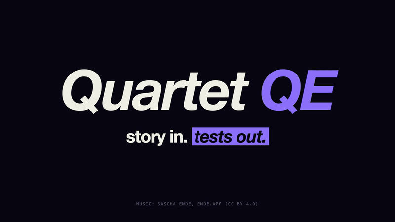

AI agents that prove their work
Quartet QE turns a user story into tests you can trust.

Two products, both show their work
Quartet QE
Writes end-to-end tests from a user story, then replays them with no AI. Websites, phone browsers, native Android apps, APIs, Kafka and databases.
Read about Quartet QECallahan CI
Runs your pipelines on your own machine and posts AI review and security findings to your pull requests.
Read about Callahan CIA story in, proof out
01Story
Write it in plain English, or pull a ticket from Jira, Azure DevOps, GitHub or GitLab.
02Tests
The AI reads your context, writes the tests and validates them.
03Replay
The recording is the test. Every rerun uses no AI.
04Approve
A person reviews the evidence. The AI never merges.
What Quartet QE tests
| Target | What it does |
|---|---|
| Websites | Runs a real browser and takes a screenshot at every step. |
| Phone browsers | Runs the same story on mobile browsers. |
| Native Android apps | Taps, types and checks inside the app itself. |
| APIs | Checks calls against your API descriptions. |
| Kafka | Publishes, consumes and checks what arrived. |
| Postgres and MongoDB | Checks the data a feature left behind. |
Open and checkable
| Item | How |
|---|---|
| Source | Open source under the MIT licence. |
| Releases | SHA-256 checksums, a software bill of materials and build provenance. |
| Launcher | The plugin downloads one pinned release and checks its SHA-256 first. |
| Files | File access is confined and credential files are refused. |
| Privacy | No account and no telemetry. It runs on your machine. |
Install Quartet QE
Claude Code plugin
Add the marketplace, then install.
/plugin marketplace add Callahan-ci/quartet-qe /plugin install quartet-qe@quartet-qe